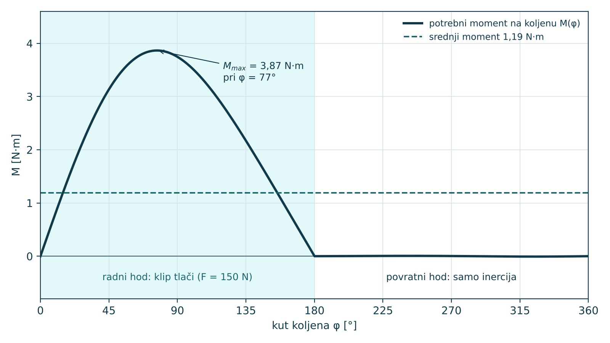
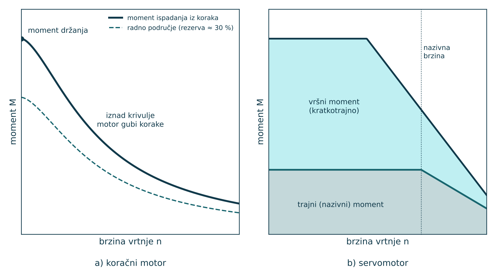
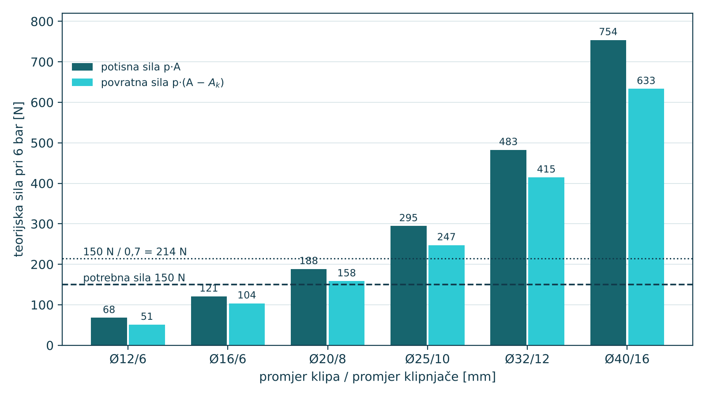

MODUL 2 · OSNOVNI TIPOVI MEHANIZAMA
Nastavna jedinica 2.5
Pogoni mehanizama: motor s reduktorom, koračni i servomotor, pneumatski i hidraulički cilindar
Mehanizam sam od sebe ne radi ništa: netko mu mora dati gibanje i snagu. U mehatroničkom sustavu to su elektromotori i cilindri, a zadatak konstruktora je izabrati pogon koji daje dovoljan moment ili silu u svakom položaju mehanizma, a nije predimenzioniran. U ovoj jedinici povezujete kinematiku mehanizma s potrebnim momentom i silom te ih uspoređujete s karakteristikama pogona.
- nabrojati vrste pogona mehanizama i njihove tipične primjene u mehatronici
- izračunati potrebni moment pogonskog člana iz bilance snage i prijenosne funkcije mehanizma
- preračunati moment, brzinu vrtnje i moment inercije preko reduktora
- objasniti razliku između koračnog motora i servomotora na temelju karakteristike moment–brzina
- izračunati silu pneumatskog i hidrauličkog cilindra i izabrati promjer uz rezervu sile
- obrazložiti zašto se pogon bira prema vršnom, a ne prema srednjem opterećenju
Pogonski lanac
Pogon mehanizma čini lanac: izvor energije (električna mreža, kompresor, hidraulički agregat), pretvornik u mehanički rad (motor ili cilindar), prijenosnik (reduktor, remen, vreteno) i na kraju mehanizam s radnim članom. Svaka karika ima svoj stupanj djelovanja, pa je ukupni η = η₁·η₂·…·ηₙ. Uz pogon dolazi i upravljanje: prekidač i krajnji prekidači, frekvencijski pretvarač, upravljač koračnog motora ili servoregulator s enkoderom.
| Pogon | Gibanje | Upravljanje položajem | Tipična primjena u laboratoriju |
|---|---|---|---|
| elektromotor s reduktorom | vrtnja, stalna brzina | nema (krajnji prekidači) ili enkoder | transportna traka, dozator s brijegom |
| koračni motor | vrtnja u koracima | otvorena petlja, broji se korake | 3D pisač, okretni stol, mali linearni modul |
| servomotor | vrtnja, bilo koji profil | zatvorena petlja s enkoderom | osi robota, CNC, prihvatnica sa servopogonom |
| pneumatski cilindar | pravocrtno, dva krajnja položaja | razvodnik, senzori na cilindru | stezanje, guranje, prihvatnica |
| hidraulički cilindar | pravocrtno, velike sile | proporcionalni ili servo ventil | preše, dizalice, mobilni strojevi |
Mehanizam je u tom lancu prijenosnik s promjenljivim prijenosnim omjerom. Klipni mehanizam s koljenom pretvara stalni moment motora u silu na klipu koja ovisi o položaju, a cilindar koji okreće polugu daje moment koji se mijenja s kutom. Zato se pogon ne može izabrati bez kinematike mehanizma.
Od mehanizma do potrebnog momenta
Najkraći put do potrebnog momenta je bilanca snage. Ako zanemarimo trenje i masu ojnice, snaga koju daje koljeno jednaka je snazi koja se troši na radnom članu: na svladavanje vanjske sile i na ubrzavanje mase. Omjer brzine radnog člana i kutne brzine koljena je prijenosna funkcija ds/dφ, koju već znate iz kinematike.
M·ω = (F_otp + m·a)·v ⇒ M(φ) = (F_otp + m·a)·(ds/dφ) / η
Ovdje je F_otp sila otpora na radnom članu (iznos), m masa radnog člana, a ubrzanje u smjeru gibanja, v brzina, a η stupanj djelovanja mehanizma. Moment se mijenja tijekom okretaja: nula je u mrtvim točkama, a najveći je ondje gdje je ds/dφ najveći. Srednji moment određuje utrošenu energiju, a najveći moment određuje veličinu pogona.

Zapamtite
Pogon se bira prema dvama kriterijima: najveći moment (ili sila) u ciklusu mora biti manji od najvećeg koji pogon može dati, a efektivni moment kroz ciklus manji od trajnog (nazivnog) momenta, inače se motor pregrijava. Srednja snaga je samo podatak o potrošnji energije.
Elektromotor s reduktorom
Asinkroni i istosmjerni motori najbolje rade pri velikim brzinama vrtnje (1000–3000 min⁻¹) i malim momentima, a mehanizmi trebaju sporu vrtnju i veliki moment. Reduktor s prijenosnim omjerom i smanjuje brzinu i povećava moment, uz gubitke koje opisuje η. Čeoni reduktori imaju η od oko 0,95 po stupnju, a pužni, ovisno o omjeru, od oko 0,5 do 0,9.
n_m = i·n, M_m = M / (i·η), P = M·ω = M·2π·n/60
Masa koju pogon ubrzava također se preračunava. Moment inercije tereta J_t vidi se na vratilu motora kao J_t/i². Zato reduktor ne štiti samo od velikog momenta nego i od velikog omjera inercija tereta i rotora, koji otežava regulaciju. Za servopogone se taj omjer obično drži ispod 10, a za vrlo dinamična gibanja i niže.
J_red = J_t / i²
Za dozator sa slike 2.5.1 izlazna brzina je 60 min⁻¹. Uz motor od 1500 min⁻¹ treba omjer i = 25. Najveći moment na koljenu je 3,87 N·m, a efektivni 1,89 N·m. Uz η = 0,85 motor treba dati vršno 3,87/(25·0,85) = 0,182 N·m i trajno 0,089 N·m. S faktorom sigurnosti 1,5 traži se motor s nazivnim momentom od barem 0,13 N·m i kratkotrajnim od barem 0,27 N·m. Motor od 25 W (0,16 N·m pri 1500 min⁻¹, vršno dvostruko) zadovoljava oba uvjeta, iako srednja snaga na izlazu iznosi samo 7,5 W.
Koračni motor i servomotor
Koračni motor zakreće se za stalan kut po impulsu, najčešće 1,8° (200 koraka po okretaju). Upravljač s mikrokoracima dijeli korak na manje dijelove i smiruje vrtnju. Položaj se ne mjeri, nego se broje poslani impulsi. To je jeftino i dovoljno točno dok god je potrebni moment manji od momenta ispadanja iz koraka, koji brzo pada s brzinom vrtnje. Kad se prijeđe, motor tiho izgubi korake, a upravljač to ne zna.
Servomotor ima enkoder i regulator koji stalno uspoređuje zadani i stvarni položaj. Daje trajni (nazivni) moment do nazivne brzine i kratkotrajno vršni moment, obično dva do tri puta veći, za ubrzavanje. Zbog zatvorene petlje servopogon izvodi bilo koji zakon gibanja, pa može zamijeniti i brijeg (elektronički brijeg, jedinica 4.1).

Kod linearnih modula motor pokreće vreteno uspona P_h. Iz bilance snage slijedi aksijalna sila F = 2π·M·η/P_h. Kuglično vreteno uspona 5 mm s η = 0,9 pretvara moment 0,5 N·m u silu od 565 N.
F = 2π·M·η / P_h
Pneumatski i hidraulički cilindar
Cilindar je pogon koji daje izravno pravocrtno gibanje i silu. Teorijska sila je umnožak tlaka i djelotvorne površine klipa. Pri izvlačenju djeluje cijela površina, a pri uvlačenju površina umanjena za presjek klipnjače. Stvarna sila manja je zbog trenja brtvi (stupanj djelovanja oko 0,85–0,95) i zbog pada tlaka pri brzom gibanju.
F = p·A = p·π·D²/4, F_povr = p·π·(D² − d²)/4
Cilindar Ø20 mm pri pretlaku 6 bar = 0,6 MPa: A = π·20²/4 = 314,2 mm², pa je F = 0,6 N/mm² · 314,2 mm² = 188,5 N. Uz klipnjaču Ø8 povratna sila iznosi 158,3 N. Kod pneumatike se za gibanja s ubrzanjem preporučuje da potrebna sila ne prijeđe oko 70 % teorijske, jer ostatak treba za trenje i ubrzanje mase, a tlak u mreži varira.

Hidraulički cilindri rade s tlakovima od 50 do 300 bar, pa isti promjer daje desetke puta veću silu: Ø25 pri 50 bar daje 2454 N. Ulje je praktički nestlačivo, pa se hidraulički cilindar može zaustaviti u bilo kojem položaju i precizno regulirati. Zrak je stlačiv: pneumatski cilindar je brz, čist i jeftin, ali bez dodatne opreme radi samo od jednog do drugog krajnjeg položaja.
Kad cilindar pokreće polugu, kao u modelu krana, moment na zglobu je umnožak sile cilindra i okomite udaljenosti njegove osi od zgloba. Ta udaljenost mijenja se s kutom poluge, pa se cilindar provjerava u najnepovoljnijem položaju, a ne u srednjem.
Brojčani primjer: isti zadatak, dva pogona
Dozator treba potisnuti klip s otporom 150 N na putu od 50 mm, jednom u sekundi. Varijanta A je klipni mehanizam r = 25 mm, l = 100 mm s motorom i reduktorom; varijanta B je pneumatski cilindar koji gura klip izravno. Svi rezultati izračunani su Python skriptom koja crta slike 2.5.1 i 2.5.3.
| Veličina | A: motor + reduktor + koljeno | B: pneumatski cilindar |
|---|---|---|
| rad po ciklusu | 150 N · 0,05 m = 7,5 J | 7,5 J |
| najveće opterećenje pogona | M_max = 3,87 N·m na koljenu (φ = 77°) | F = 150 N kroz cijeli hod |
| preračunato na pogon | 0,182 N·m na motoru (i = 25, η = 0,85) | potrebna teorijska sila 150/0,7 = 214 N |
| izbor | motor 25 W, 0,16 N·m nazivno, 1500 min⁻¹ | Ø25/10 mm: 294,5 N (Ø20 ima samo 188,5 N) |
| napomena | hod točno 2r, gibanje sinusoidalno | potrošnja oko 0,31 NL zraka po ciklusu, 19 NL/min |
U simulaciji
U SolidWorks Motion Analysisu na koljeno postavite rotacijski motor stalne brzine 60 min⁻¹, a na klip silu 150 N suprotnu gibanju u radnom hodu. Iz rezultata „Motor Torque“ očitajte najveći moment i usporedite ga s 3,87 N·m. Zatim motor zamijenite linearnim pogonom (silom) na klipu i provjerite koliko sile treba kad masi klipa dodate 5 kg i povećate brzinu na 300 min⁻¹.
Pažnja
Kataloška snaga motora odnosi se na nazivnu brzinu. Motor od 25 W pri 1500 min⁻¹ ne daje 25 W pri 150 min⁻¹ bez reduktora; daje približno isti moment, a deset puta manju snagu.
Ključni pojmovi
| Pojam | Značenje |
|---|---|
| pogonski lanac | slijed izvora energije, pretvornika, prijenosnika i mehanizma koji pokreće radni član |
| prijenosni omjer reduktora | omjer brzine vrtnje ulaza i izlaza, i = n_m/n |
| reducirani moment inercije | moment inercije tereta preračunat na vratilo motora, J_t/i² |
| efektivni moment | korijen srednje vrijednosti kvadrata momenta kroz ciklus; mjerodavan za zagrijavanje motora |
| moment držanja | najveći moment kojim napajani koračni motor u mirovanju drži položaj |
| moment ispadanja iz koraka | najveći moment koji koračni motor daje pri određenoj brzini bez gubitka koraka |
| servomotor | motor s enkoderom i regulatorom položaja u zatvorenoj petlji |
| teorijska sila cilindra | umnožak radnog tlaka i djelotvorne površine klipa |
| iskorištenost cilindra | omjer potrebne i teorijske sile; za dinamična gibanja do oko 0,7 |
Provjeri se
Kratka provjera prije prelaska na sljedeću jedinicu. Odgovor se potvrđuje klikom, a obrazloženje se prikazuje odmah.
Pitanje 1 od 4
Motor daje 0,2 N·m pri 1500 min⁻¹. Koliki je moment na izlazu reduktora s i = 20 i η = 0,9?
M = M_m·i·η = 0,2·20·0,9 = 3,6 N·m; brzina na izlazu je 75 min⁻¹.
Pitanje 2 od 4
Koja je teorijska potisna sila pneumatskog cilindra Ø20 mm pri pretlaku 6 bar?
F = p·A = 0,6 N/mm² · π·20²/4 mm² = 0,6 · 314,2 = 188,5 N.
Pitanje 3 od 4
Što se događa kad potrebni moment premaši moment ispadanja iz koraka koračnog motora?
Koračni motor radi u otvorenoj petlji: položaj se ne mjeri, pa izgubljeni koraci ostaju neotkriveni dok se ne doda enkoder ili referentni senzor.
Pitanje 4 od 4
Moment inercije tereta je 0,002 kg·m², a reduktor ima i = 10. Koliki moment inercije vidi motor?
J_red = J_t/i² = 0,002/100 = 0,00002 kg·m² = 2·10⁻⁵ kg·m².
Odgovoreno 0 od 4.